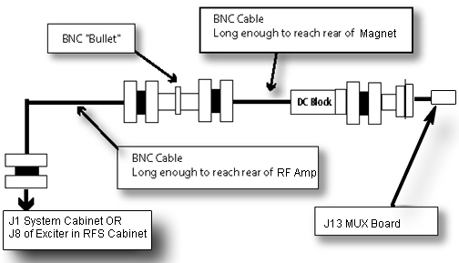
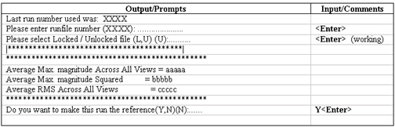
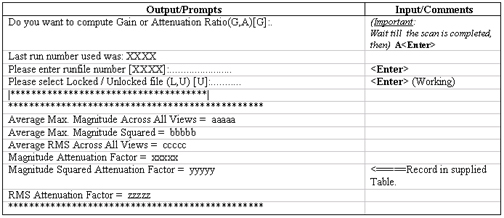

Operating Documentation
Direction 5133330-3, Rev# 14
Signa EXCITE HD 3.0T Service Methods
Module Version 1.0, Version Date 5/3/07
Operating Documentation |
| Required Persons | Preliminary Reqs | Procedure | Finalization |
|---|---|---|---|
| 1 | Not Applicable | 30 mins | Not Applicable |
The Signa system EXCITER, Receiver reference cables, DC Block and adaptor connectors are use as a test setup to measure the attenuation of the RF transmit path cables (from output of the RF amp to the inputs of the head TR switch for:
Head
Body
MNS
| Item | Qty | Effectivity | Part# | Manufacturer | |
|---|---|---|---|---|---|
| 3T RF Power Measurement Kit | 1 | - | 2372868 | - | |
The Test Setup is connected between J1 and J2 of the System cabinet (See Illustration 1). Receiver gains R1 and R2 and transmit gain TG are set for near full scale reading on the power spectrum during pescan calibration. A reference scan is performed and analyzed using the ‘atten_test’ tool on the Test Setup to establish a base line. After the baseline is created the Test Setup hardware is reconfigured and connected a the RF transmit path and another scan is performed and the data analyzed using the ‘atten_test’ tool. This reconfiguration and connection process is repeated for each other RF transmit path.
Illustration 1: CONNECTIONS FOR THE INTIAL AMPLITUDE SCAN

The ‘atten_test’ program will provide the [Magnitude Squared Attenuation Factor] for each test setup. The result will be use to calculate the Attenuation in (dB) for each test setup.
Remove front cover from system cabinet.
Configure test hardware ash shown in Illustration 1.
Make sure Accessory PC is in Operate Mode otherwise system will not scan.
At the operator workspace, prepare the system for scan using the procedure Dummy Load.
Set a landmark if necessary, then Save Series.
Use the right mouse key, select [Research Operations] then select [Display CVs].
Set value of CV calmode to 2 (trapezoid pulse).
(Caution here. Make sure the previous CV has been cleared before entering the next one. Look at the screen!)
Set value of CV p2_ramp to 1 (1 µsec ramp time).
Set value of CV t2 to 50000 (50 msec tr).
Set value of CV pismode to 1 (exc service).
Set value of CV pmode to 1 (data collection).
Set value of CV daqm to 1 (data in window).
Select [Accept] and then select [Research Operations], then select [Download] then select [Manual Prescan].
When in [Manual Prescan], set Analog Gain R1 to 7, and Digital Gain R2 to 14.
Adjust transmit gain (TG) to achieve an R1 or R2 (on IP display) of approximately 98%, without going over.
Select [Done].
Select [Scan] (Ignore the message: MR signal too large, reduce receiver gain.) (Note: on the LX systems tested, the scan time starts at 13 seconds, counts down to 7 seconds, then ends. This appears to be normal. Do not react to this event!)
From the MR Tools desktop Service Desktop, start [Attenuation Test]. See Illustration 2.
Illustration 2: Starting Attenuation Test
Use [Atten Test] tool selection to analyze data, as shown in Illustration 3.
Illustration 3: DATA COLLECTION

Measure the RF Amp output path attenuation from the RF Amp up to Head T/R SW input as follows. Verify the TR switch at the front panel of the Driver Module is in the “DIS” position. (TR Fault Disable Mode/Service/Bypass)
Disconnect the head RF output cable attached to the RF power amplifier and connect it with a BNC - N adaptors to the coax reference cable coming from the system cabinet J1 (RF out).
Disconnect J6 (the RG-223 cable) from the Head T/R Switch inside the carriage cover on the patient table cradle and connect it to the coax reference cable coming from the system cabinet J2 through the DC block unit.
Reselect the scanning icon again to activate the scanning screen.
Select [Scan].
10. When the scan is completed, re-select the tools icon again to activate the ‘atten_test’ analysis section again. Go to Analysis for analysis instructions. Do not make this run the reference.
After analysis is complete , reconfigure the hardware to measure the attenuation of the RF Body Trasmit chain as follows:
Reconnect the Head RF Transmit cable to the RF amp and Had I/F switch in the LPCA.
Disconnect the Body RF transmit cable from the RF amp and connect it to the coax reference cable coming from thesystemm cabinet. J1 (RF out) using BNC 7116 DIN adaptors.
Disconnect the flexible RF Body Transmit cable from the input to the Body Hybrid and connect it to the coax reference cable coming from the system cabinet J2 Through The DC Block using BNC-7116 DIN adaptors.
| NOTE: | Must use multiple adaptors from both the 3T RF Power Measurement Kit and RF test cable kit. |
Select [Scan].
When the scan is completed, return to the MR Tools desktop Service Desktop, start [Attenuation Test] again. See Step 5 for help if needed.
After analysis is complete, Reconfigure the hardware for to measure the attenuation RF MNS Transmit chain (If Applicable) as follows:
Disconnect the flexible RF body transmit cable from the input to the Body hybrid and connect it to the coax reference cable coming from the system cabinet J2 through the DC block using BNC-7116 DIN adaptors.
| NOTE: | Must use multiple adaptors from both the 3T RF Power measurement Kit and the RF test Cable Kit. |
Select [Scan].
When the scan is completed, re-select the tools icon again to activate the ‘atten_test’ analysis section again. Go to Analysis for analysis instructions.
See
Illustration 4: Analysis

Record “Magnitude Squared Attenuation Factor” value produced by the analysis program, for each hardware setup being analyzed.
a. Setup 1 RF transmit path (Head) – Table line item 1.
a. Setup 1 RF transmit path (Body) – Table line item 2.
a. Setup 1 RF transmit path (MNS) optional – Table line item 3.
Calculate the attenuation (dB) for each hardware setup using the formula: 10 * log [Max Squared Attenuation Factor].
Record in Table 1 line items 1, 2 and 3.
After calculating the attenuation for a given setup go back to Appendix A section 4 and perform the next setup.
Table 1: Attenuation Values
| Item | Label | Values |
| 1 | Setup 1 RF transmit path (Head) | |
| 2 | Setup 1 RF transmit path (Body) | |
| 3 | Setup 1 RF transmit path (MNS) optional | |
| 4 | Dial Attenuator Magnitude Squared Attenuation Factor | |
| 5 | Dial Attenuator and cables Attenuation (dB) |
No finalization steps.